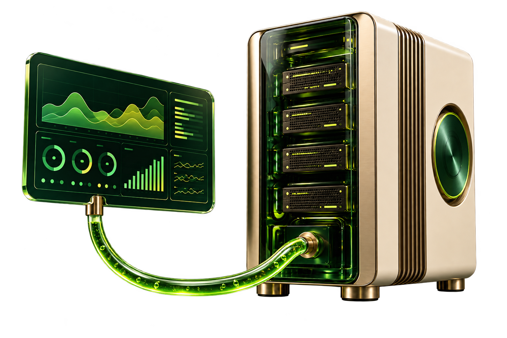
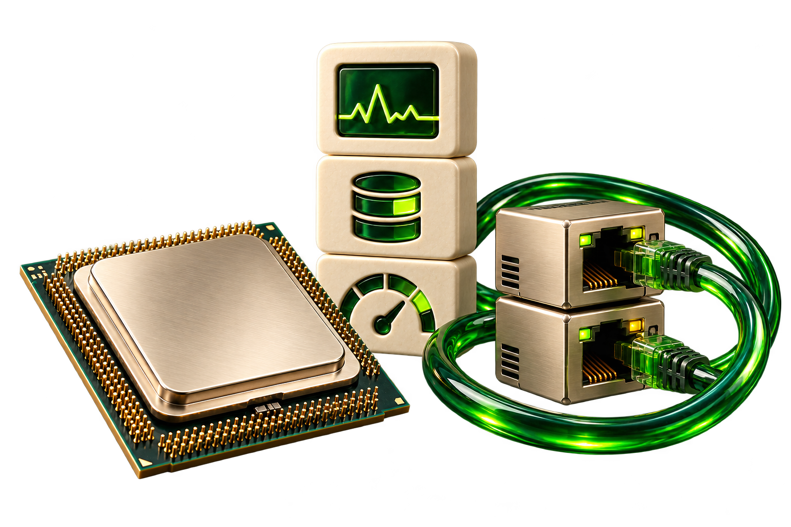

CPU ACTIVIDAD
Uso del procesador y espera de entrada/salida. Se toma la segunda muestra para observar un intervalo.
vmstat 1 2Monitoreo de recursos en Debian.
Del dato del sistema a una lectura visual.
Consulta y recolección
de recursos.
server interpreta el texto.
src lo convierte en interfaz.

El coordinador ejecuta los monitores. Cada uno entrega su salida de texto a api.sh para enviarla al servidor.
Cada minuto inicia
la recolección.
Ejecuta los siete
monitores de recursos.
Envía cada bloque
por HTTP POST.
Analiza el texto y
produce datos JSON.
↳Si falla el envío
El bloque se imprime y cron lo agrega a cron.log: queda disponible como archivo de entrada.
CPU, red y usuarios: tres formas de entender qué está haciendo el servidor y quién está conectado.
4 SCRIPTS · 3 ÁREAS DE OBSERVACIÓN
ESQUEMA ILUSTRATIVOUso del procesador y espera de entrada/salida. Se toma la segunda muestra para observar un intervalo.
vmstat 1 2Tráfico acumulado por interfaz y vecinos conocidos por el sistema. La tabla de vecinos no es un escaneo de red.
ip -s address showip neigh showSesiones, terminales y origen de las conexiones para reconocer la presencia de usuarios en el servidor.
who -aDisco, memoria y servicios.
Tres consultas concretas para conocer
el estado de los recursos esenciales.
Ocupación y espacio disponible por partición. Se excluyen los sistemas temporales tmpfs y devtmpfs.
df -hP -x tmpfs -x devtmpfsRAM y swap expresadas en megabytes. Una lectura del consumo y la disponibilidad de memoria del sistema.
free -mComprueba la presencia de cron y sshd como procesos. No realiza una prueba profunda de funcionamiento.
ps -C cron ps -C sshdapi.sh.El servidor convierte la salida de los scripts en información que el dashboard puede mostrar y actualizar.
Datos simulados para explorar la interfaz.
Lecturas enviadas por HTTP desde Debian.
Salida de los scripts guardada en archivo.
API y log consultan el mismo endpoint: el servidor prioriza los datos HTTP disponibles; si no los hay, lee el archivo.
Consulta cada 5 segundos.
La lectura de Debian se renueva con cron, cada minuto.